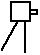

Here are the two ordinary letters.
Capital Small Sounds like Л л l as in left (letter name is “ell”) П п p as in pie (letter name is “peh”)
And here are the dramas!
This is a picture of a violin
Some vicious villian has violently divided the violin in two.
Look at the shape of the violently divided violin.
Here is a Russian letter that looks like the divided violin and has the consonant sound of v in violin: В (its letter name is “veh”)
This is a picture of a surveying instrument on a tripod: 
You use the surveying instrument to measure how big your yard is.
Right now you are probably screaming, “Yaaaaaargh. I've never seen anything so stupid or far-fetched.”
It is stupid, but it’s the best I could do to show you something that looks like this Russian vowel which sounds like ya in yacht or yard: Я (its letter name is “ya”).
| ← Left and Right | ↑ Index | Left and Right (part 2) → |